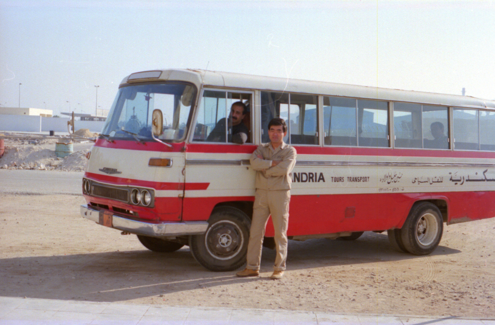

８０．「あのバスを追いかけろ！」(エジプト)
アレキサンドリアに赴任しているときに日本人が多くなりすぎたのと、事故を心配して会社が休日専用バスを
仕立ててくれた。キャンプ（宿舎）とアレキサンドリア市内東側のスポーツクラブまで往復２便の無料バスを設
定してくれた。
その日はぶらぶら一人でアレキサンドリアを歩いていた。スポーツクラブに４時頃まで行けばこの無料バスに
乗れるが面倒だったのでタクシーを拾ってキャンプに向かった。この頃は値段の交渉には慣れていたので問題な
かった。しばらく走っていたら、例の無料バスが私のタクシーを追い越していった。
通じないだろうと思いながら、運転手に「chase that bus」と言ったら通じて猛然とダッシュして追いつきバ
スを止めてくれた。
さて、タクシー代を私は幾ら支払わなければならないのでしょうか。最初の約束は２００円です。バスを拾った
のは丁度中間点位です。タクシーの運転手は必死に走り無料バスを捕まえてくれました。みなさんなら幾ら支払
いますか。

え？私ですか。自称値切りの達人です、半額の１００円を払いました。当然運転手は最初の約束２００円よこ
せと言ってきました。答えは「半分しか走っていないじゃないか！」でバスに乗り込みました。タクシーの運転
手は気が収まらず、無料バスの運転手に抗議していました。が、バスの運転手も「１００円ももらったら十分だ」
と言っていたみたいでした。
本当は２００円払っても良いのですが、あまり簡単に彼らの言うとおりに支払うと日本人への請求がだんだん高
くなる恐れがあるのです。だから簡単に応じない方が後々の為に、後から来る日本人の為にもなるのです。当然
日本人観光客の為にもなります。当時我々日本人はこんな考えを共有し始めて、彼らの理不尽な要求には例え１
０円でも応じないようにしていたと思います。
現に出張でアレキサンドリアに来たときは５０円で済むところ１０００円も払わされていたのです。
（３６章「初めての反撃値切り交渉」）
２００１年１０月 ９日 記
|